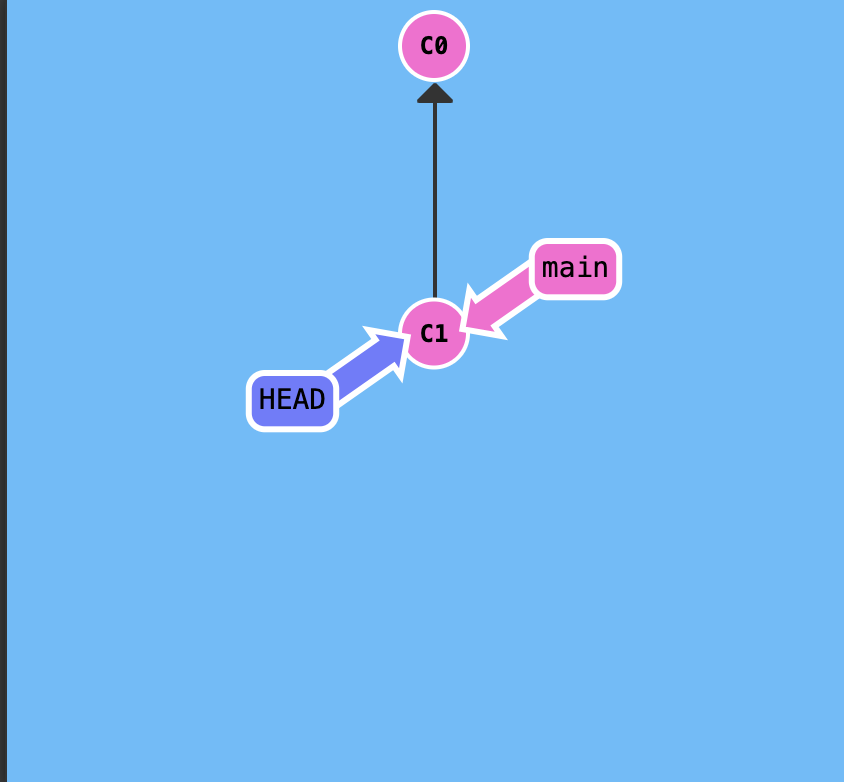
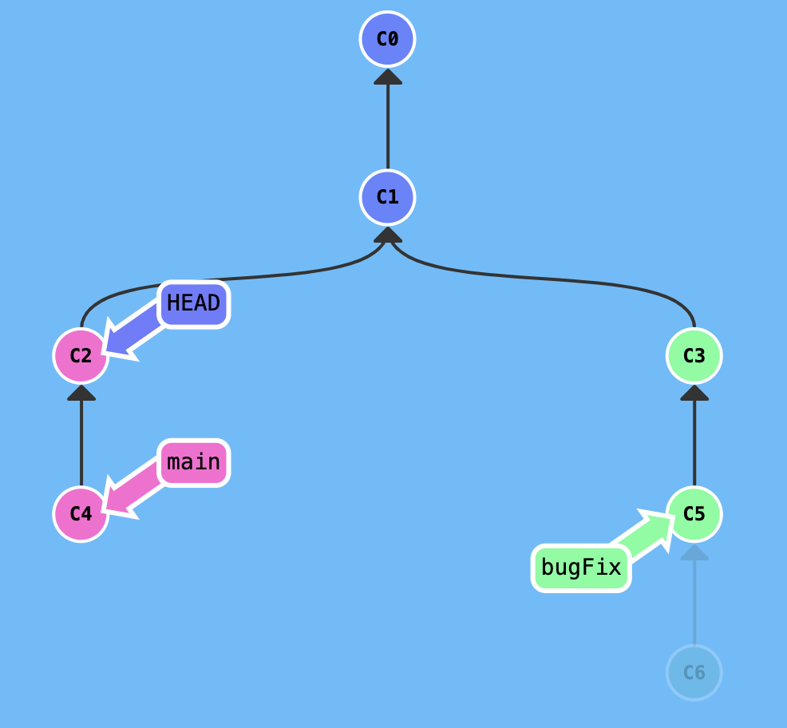

不確定什麼時候會用到，但記下來就對了。
絕對位置
我們除了在不同分支上工作以外，有時候也會需要切換到「指定的 commit」（例如要做 rollback 的時候），這個時候可能就會需要「切換 HEAD」的位置。
假設目前的紀錄長這樣：
在我們沒有去刻意移動 HEAD 的情況下，它通常會指向目前的所在分支（main）
現在我們可以用下面的指令來把 HEAD 移動到 C1 這個「commit」上：
1 | git checkout C1 |
執行完的結果如下：

雖然位置看起來是一樣的，不過差別在於一個指向的是「分支」， 一個則是「Commit」。
這種透過 Hash 值來移動的方式是「絕對位置」，等一下會介紹怎麼用「相對位置」的方式來做移動。
相對位置
除了直接指定 Hash 值以外，我們也可以利用 HEAD^ 或 HEAD~<num> 的方式來根據目前的位置來移動 HEAD。
例如說底下的這筆紀錄：
目前我們位於 main 分支上，現在如果想把 HEAD 移動到 C0 的位置，可以用兩種不同方式來達成。
第一種：
1 | git checkout HEAD^ // 移動到 C1 |
第二種：
1 | git checkout HEAD~2 |
我覺得這邊比較重要的是「相對位置」的概念，不論你是喜歡用 HEAD^ 還是 HEAD~，它們都一定是基於某一點來做移動，這才是比較核心的概念。
絕對位置 + 相對位置合在一起使用
絕對跟相對其實是可以一起使用的，直接來看範例會比較好理解一點。
假設這是目前的紀錄：
HEAD 現在位於 main 分支上，如果我想要移動到 C3 的位置的話可以怎麼做？
如果是用絕對位置的方式的話：
1 | git checkout C3 |
或者是相對位置的話：
1 | git checkout bugFix // 先切換分支 |
或是乾脆一點，直接混再一起用：
1 | git checkout bugFix^ // 切換到 bugFix 的前一個 commit |
總而言之切換 HEAD 的方式有很多種，這邊只是想提醒一下混用的功能，我覺得這還蠻新奇的。
移動分支的 commit 位置
這個我目前還不確定它的實際用途，不過第一次知道有這個功能所以就順便記錄一下吧。
簡單來說除了移動 HEAD 以外，我們還可以直接把分支移動到某一個 commit 上，這樣子說有點抽象，所以一樣來看圖吧。
假設這是目前的紀錄：

如果我想要移動 bugFix 這整個分支的位置的話，我可以這樣做：
1 | git branch -f bugFix C3 |
附註：這邊的指令是 git branch -f <分支名稱> <要移動到的位置>
執行完的結果如下：
這樣子就可以把 bugFix 從原本的 C5 移動到 C3 的位置了。